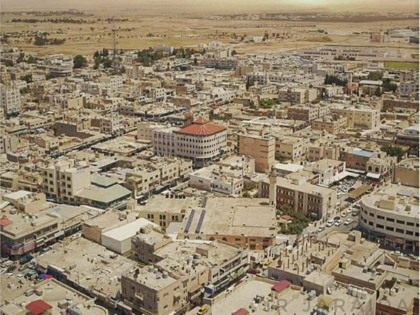

Al-Mafraq is a charming city located in the northern part of Jordan, known for its vast agricultural lands and fertile fields. As one of the main agricultural hubs of the country, Al-Mafraq is home to a rich diversity of crops, from grains to vegetables, which sustain much of the country’s food production.
Al-Mafraq’s rural charm offers a slower pace of life, where tradition and nature go hand-in-hand. The city serves as a bridge between the desert and the fertile lands, offering a unique perspective on the Jordanian countryside. Its proximity to the Syrian border and the ancient trade routes has shaped its cultural heritage, making it an integral part of the region's history.
